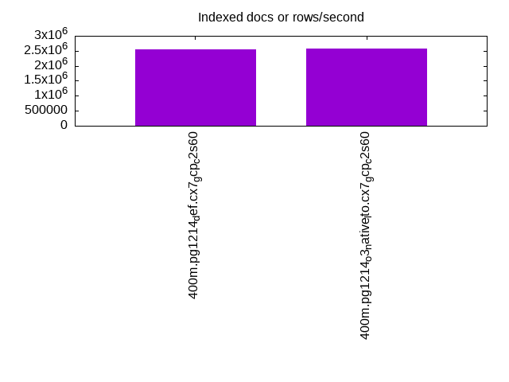

This is a report for the insert benchmark with 400M docs and 20 client(s). It is generated by scripts (bash, awk, sed) and Tufte might not be impressed. An overview of the insert benchmark is here and a short update is here. Below, by DBMS, I mean DBMS+version.config. An example is my8020.c10b40 where my means MySQL, 8020 is version 8.0.20 and c10b40 is the name for the configuration file.
The test server is a c2-standard-60 from GCP with 30 cores, hyperthreading disabled, 240G RAM and 3T from XFS and SW RAID 0 striped over 8 local NVMe drives. The benchmark was run with 20 clients and there were 1 or 2 connections per client (1 for queries, 1 for inserts). The benchmark loads 400M rows without secondary indexes, creates secondary indexes, loads another 400M rows then does 3 read+write tests for one hour each that do queries as fast as possible with 100, 500 and then 1000 writes/second/client concurrent with the queries. Each read-write test runs for 1800 seconds. The test was configured to use a table per client. The database is cached by the storage engine and the only IO is for writes. Clients and the DBMS share one server. The per-database configs are in the per-database subdirectories here.
The tested DBMS are:
The numbers are inserts/s for l.i0 and l.i1, indexed docs (or rows) /s for l.x and queries/s for q*.2. The values are the average rate over the entire test for inserts (IPS) and queries (QPS). The range of values for IPS and QPS is split into 3 parts: bottom 25%, middle 50%, top 25%. Values in the bottom 25% have a red background, values in the top 25% have a green background and values in the middle have no color. A gray background is used for values that can be ignored because the DBMS did not sustain the target insert rate. Red backgrounds are not used when the minimum value is within 80% of the max value.
| dbms | l.i0 | l.x | l.i1 | q100.1 | q500.1 | q1000.1 |
|---|---|---|---|---|---|---|
| 400m.pg1214_def.cx7_gcp_c2s60 | 1403509 | 2548408 | 404858 | 191974 | 193981 | 198060 |
| 400m.pg1214_o3_native_lto.cx7_gcp_c2s60 | 1403509 | 2564744 | 403226 | 198992 | 200609 | 204408 |
This lists the average rate of inserts/s for the tests that do inserts concurrent with queries. For such tests the query rate is listed in the table above. The read+write tests are setup so that the insert rate should match the target rate every second. Cells that are not at least 95% of the target have a red background to indicate a failure to satisfy the target.
| dbms | q100.1 | q500.1 | q1000.1 |
|---|---|---|---|
| pg1214_def.cx7_gcp_c2s60 | 1976 | 9885 | 19769 |
| pg1214_o3_native_lto.cx7_gcp_c2s60 | 1976 | 9885 | 19769 |
| target | 2000 | 10000 | 20000 |
l.i0: load without secondary indexes. Graphs for performance per 1-second interval are here.
Average throughput:
Insert response time histogram: each cell has the percentage of responses that take <= the time in the header and max is the max response time in seconds. For the max column values in the top 25% of the range have a red background and in the bottom 25% of the range have a green background. The red background is not used when the min value is within 80% of the max value.
| dbms | 256us | 1ms | 4ms | 16ms | 64ms | 256ms | 1s | 4s | 16s | gt | max |
|---|---|---|---|---|---|---|---|---|---|---|---|
| pg1214_def.cx7_gcp_c2s60 | 61.414 | 37.691 | 0.841 | 0.016 | 0.025 | 0.013 | 0.625 | ||||
| pg1214_o3_native_lto.cx7_gcp_c2s60 | 59.796 | 39.346 | 0.799 | 0.026 | 0.020 | 0.014 | 0.913 |
Performance metrics for the DBMS listed above. Some are normalized by throughput, others are not. Legend for results is here.
ips qps rps rmbps wps wmbps rpq rkbpq wpi wkbpi csps cpups cspq cpupq dbgb1 dbgb2 rss maxop p50 p99 tag 1403509 0 0 0.0 1843.8 463.0 0.000 0.000 0.001 0.338 209889 60.7 0.150 13 38.3 103.2 NA 0.625 79645 11792 400m.pg1214_def.cx7_gcp_c2s60 1403509 0 0 0.0 1842.3 466.1 0.000 0.000 0.001 0.340 232757 59.6 0.166 13 38.3 103.2 NA 0.913 79746 14484 400m.pg1214_o3_native_lto.cx7_gcp_c2s60
l.x: create secondary indexes.
Average throughput:
Performance metrics for the DBMS listed above. Some are normalized by throughput, others are not. Legend for results is here.
ips qps rps rmbps wps wmbps rpq rkbpq wpi wkbpi csps cpups cspq cpupq dbgb1 dbgb2 rss maxop p50 p99 tag 2548408 0 8390 107.8 3498.8 855.5 0.003 0.043 0.001 0.344 98070 26.6 0.038 3 73.5 170.5 0.0 0.092 NA NA 400m.pg1214_def.cx7_gcp_c2s60 2564744 0 8411 112.9 3484.0 856.2 0.003 0.045 0.001 0.342 101553 25.1 0.040 3 73.5 170.5 0.0 0.314 NA NA 400m.pg1214_o3_native_lto.cx7_gcp_c2s60
l.i1: continue load after secondary indexes created. Graphs for performance per 1-second interval are here.
Average throughput:
Insert response time histogram: each cell has the percentage of responses that take <= the time in the header and max is the max response time in seconds. For the max column values in the top 25% of the range have a red background and in the bottom 25% of the range have a green background. The red background is not used when the min value is within 80% of the max value.
| dbms | 256us | 1ms | 4ms | 16ms | 64ms | 256ms | 1s | 4s | 16s | gt | max |
|---|---|---|---|---|---|---|---|---|---|---|---|
| pg1214_def.cx7_gcp_c2s60 | nonzero | 96.245 | 2.090 | 1.622 | 0.032 | 0.011 | nonzero | 1.077 | |||
| pg1214_o3_native_lto.cx7_gcp_c2s60 | 0.004 | 96.022 | 2.295 | 1.631 | 0.040 | 0.008 | 0.819 |
Performance metrics for the DBMS listed above. Some are normalized by throughput, others are not. Legend for results is here.
ips qps rps rmbps wps wmbps rpq rkbpq wpi wkbpi csps cpups cspq cpupq dbgb1 dbgb2 rss maxop p50 p99 tag 404858 0 4744 43.8 3884.3 496.1 0.012 0.111 0.010 1.255 256974 51.2 0.635 38 163.1 318.4 0.0 1.077 26371 1848 400m.pg1214_def.cx7_gcp_c2s60 403226 0 5405 44.7 3740.0 498.9 0.013 0.114 0.009 1.267 287816 50.4 0.714 37 163.1 318.3 0.0 0.819 26381 1798 400m.pg1214_o3_native_lto.cx7_gcp_c2s60
q100.1: range queries with 100 insert/s per client. Graphs for performance per 1-second interval are here.
Average throughput:
Query response time histogram: each cell has the percentage of responses that take <= the time in the header and max is the max response time in seconds. For max values in the top 25% of the range have a red background and in the bottom 25% of the range have a green background. The red background is not used when the min value is within 80% of the max value.
| dbms | 256us | 1ms | 4ms | 16ms | 64ms | 256ms | 1s | 4s | 16s | gt | max |
|---|---|---|---|---|---|---|---|---|---|---|---|
| pg1214_def.cx7_gcp_c2s60 | 99.971 | 0.023 | 0.006 | 0.001 | nonzero | 0.030 | |||||
| pg1214_o3_native_lto.cx7_gcp_c2s60 | 99.974 | 0.019 | 0.006 | 0.001 | nonzero | 0.026 |
Insert response time histogram: each cell has the percentage of responses that take <= the time in the header and max is the max response time in seconds. For max values in the top 25% of the range have a red background and in the bottom 25% of the range have a green background. The red background is not used when the min value is within 80% of the max value.
| dbms | 256us | 1ms | 4ms | 16ms | 64ms | 256ms | 1s | 4s | 16s | gt | max |
|---|---|---|---|---|---|---|---|---|---|---|---|
| pg1214_def.cx7_gcp_c2s60 | 92.379 | 5.456 | 2.165 | 0.044 | |||||||
| pg1214_o3_native_lto.cx7_gcp_c2s60 | 92.583 | 5.903 | 1.514 | 0.051 |
Performance metrics for the DBMS listed above. Some are normalized by throughput, others are not. Legend for results is here.
ips qps rps rmbps wps wmbps rpq rkbpq wpi wkbpi csps cpups cspq cpupq dbgb1 dbgb2 rss maxop p50 p99 tag 1976 191974 0 0.0 3980.2 97.2 0.000 0.000 2.014 50.351 681267 63.0 3.549 98 163.6 286.8 0.0 0.030 9526 9142 400m.pg1214_def.cx7_gcp_c2s60 1976 198992 0 0.0 3991.6 97.0 0.000 0.000 2.020 50.280 705444 62.9 3.545 95 163.6 286.7 0.0 0.026 9877 9429 400m.pg1214_o3_native_lto.cx7_gcp_c2s60
q500.1: range queries with 500 insert/s per client. Graphs for performance per 1-second interval are here.
Average throughput:
Query response time histogram: each cell has the percentage of responses that take <= the time in the header and max is the max response time in seconds. For max values in the top 25% of the range have a red background and in the bottom 25% of the range have a green background. The red background is not used when the min value is within 80% of the max value.
| dbms | 256us | 1ms | 4ms | 16ms | 64ms | 256ms | 1s | 4s | 16s | gt | max |
|---|---|---|---|---|---|---|---|---|---|---|---|
| pg1214_def.cx7_gcp_c2s60 | 99.906 | 0.061 | 0.030 | 0.004 | nonzero | 0.060 | |||||
| pg1214_o3_native_lto.cx7_gcp_c2s60 | 99.913 | 0.055 | 0.029 | 0.003 | nonzero | 0.060 |
Insert response time histogram: each cell has the percentage of responses that take <= the time in the header and max is the max response time in seconds. For max values in the top 25% of the range have a red background and in the bottom 25% of the range have a green background. The red background is not used when the min value is within 80% of the max value.
| dbms | 256us | 1ms | 4ms | 16ms | 64ms | 256ms | 1s | 4s | 16s | gt | max |
|---|---|---|---|---|---|---|---|---|---|---|---|
| pg1214_def.cx7_gcp_c2s60 | 43.952 | 25.435 | 29.038 | 1.574 | 0.001 | 0.280 | |||||
| pg1214_o3_native_lto.cx7_gcp_c2s60 | 43.562 | 26.406 | 28.512 | 1.521 | 0.001 | 0.327 |
Performance metrics for the DBMS listed above. Some are normalized by throughput, others are not. Legend for results is here.
ips qps rps rmbps wps wmbps rpq rkbpq wpi wkbpi csps cpups cspq cpupq dbgb1 dbgb2 rss maxop p50 p99 tag 9885 193981 0 0.0 6435.5 211.3 0.000 0.000 0.651 21.892 674308 64.2 3.476 99 167.1 254.9 0.0 0.060 9654 9145 400m.pg1214_def.cx7_gcp_c2s60 9885 200609 0 0.0 6441.9 210.8 0.000 0.000 0.652 21.833 698168 63.9 3.480 96 167.2 255.0 0.0 0.060 9909 9365 400m.pg1214_o3_native_lto.cx7_gcp_c2s60
q1000.1: range queries with 1000 insert/s per client. Graphs for performance per 1-second interval are here.
Average throughput:
Query response time histogram: each cell has the percentage of responses that take <= the time in the header and max is the max response time in seconds. For max values in the top 25% of the range have a red background and in the bottom 25% of the range have a green background. The red background is not used when the min value is within 80% of the max value.
| dbms | 256us | 1ms | 4ms | 16ms | 64ms | 256ms | 1s | 4s | 16s | gt | max |
|---|---|---|---|---|---|---|---|---|---|---|---|
| pg1214_def.cx7_gcp_c2s60 | 99.847 | 0.101 | 0.043 | 0.008 | 0.001 | nonzero | 0.146 | ||||
| pg1214_o3_native_lto.cx7_gcp_c2s60 | 99.855 | 0.095 | 0.042 | 0.007 | 0.001 | nonzero | 0.083 |
Insert response time histogram: each cell has the percentage of responses that take <= the time in the header and max is the max response time in seconds. For max values in the top 25% of the range have a red background and in the bottom 25% of the range have a green background. The red background is not used when the min value is within 80% of the max value.
| dbms | 256us | 1ms | 4ms | 16ms | 64ms | 256ms | 1s | 4s | 16s | gt | max |
|---|---|---|---|---|---|---|---|---|---|---|---|
| pg1214_def.cx7_gcp_c2s60 | 58.007 | 21.435 | 19.406 | 1.153 | 0.240 | ||||||
| pg1214_o3_native_lto.cx7_gcp_c2s60 | 56.757 | 22.223 | 19.875 | 1.146 | 0.231 |
Performance metrics for the DBMS listed above. Some are normalized by throughput, others are not. Legend for results is here.
ips qps rps rmbps wps wmbps rpq rkbpq wpi wkbpi csps cpups cspq cpupq dbgb1 dbgb2 rss maxop p50 p99 tag 19769 198060 0 0.0 5537.7 296.9 0.000 0.000 0.280 15.377 667348 65.4 3.369 99 179.3 262.3 0.0 0.146 9877 8886 400m.pg1214_def.cx7_gcp_c2s60 19769 204408 0 0.0 5542.4 296.4 0.000 0.000 0.280 15.351 690868 65.2 3.380 96 179.3 262.7 0.0 0.083 10149 9257 400m.pg1214_o3_native_lto.cx7_gcp_c2s60
l.i0: load without secondary indexes
Performance metrics for all DBMS, not just the ones listed above. Some are normalized by throughput, others are not. Legend for results is here.
ips qps rps rmbps wps wmbps rpq rkbpq wpi wkbpi csps cpups cspq cpupq dbgb1 dbgb2 rss maxop p50 p99 tag 1403509 0 0 0.0 1843.8 463.0 0.000 0.000 0.001 0.338 209889 60.7 0.150 13 38.3 103.2 NA 0.625 79645 11792 400m.pg1214_def.cx7_gcp_c2s60 1403509 0 0 0.0 1842.3 466.1 0.000 0.000 0.001 0.340 232757 59.6 0.166 13 38.3 103.2 NA 0.913 79746 14484 400m.pg1214_o3_native_lto.cx7_gcp_c2s60
l.x: create secondary indexes
Performance metrics for all DBMS, not just the ones listed above. Some are normalized by throughput, others are not. Legend for results is here.
ips qps rps rmbps wps wmbps rpq rkbpq wpi wkbpi csps cpups cspq cpupq dbgb1 dbgb2 rss maxop p50 p99 tag 2548408 0 8390 107.8 3498.8 855.5 0.003 0.043 0.001 0.344 98070 26.6 0.038 3 73.5 170.5 0.0 0.092 NA NA 400m.pg1214_def.cx7_gcp_c2s60 2564744 0 8411 112.9 3484.0 856.2 0.003 0.045 0.001 0.342 101553 25.1 0.040 3 73.5 170.5 0.0 0.314 NA NA 400m.pg1214_o3_native_lto.cx7_gcp_c2s60
l.i1: continue load after secondary indexes created
Performance metrics for all DBMS, not just the ones listed above. Some are normalized by throughput, others are not. Legend for results is here.
ips qps rps rmbps wps wmbps rpq rkbpq wpi wkbpi csps cpups cspq cpupq dbgb1 dbgb2 rss maxop p50 p99 tag 404858 0 4744 43.8 3884.3 496.1 0.012 0.111 0.010 1.255 256974 51.2 0.635 38 163.1 318.4 0.0 1.077 26371 1848 400m.pg1214_def.cx7_gcp_c2s60 403226 0 5405 44.7 3740.0 498.9 0.013 0.114 0.009 1.267 287816 50.4 0.714 37 163.1 318.3 0.0 0.819 26381 1798 400m.pg1214_o3_native_lto.cx7_gcp_c2s60
q100.1: range queries with 100 insert/s per client
Performance metrics for all DBMS, not just the ones listed above. Some are normalized by throughput, others are not. Legend for results is here.
ips qps rps rmbps wps wmbps rpq rkbpq wpi wkbpi csps cpups cspq cpupq dbgb1 dbgb2 rss maxop p50 p99 tag 1976 191974 0 0.0 3980.2 97.2 0.000 0.000 2.014 50.351 681267 63.0 3.549 98 163.6 286.8 0.0 0.030 9526 9142 400m.pg1214_def.cx7_gcp_c2s60 1976 198992 0 0.0 3991.6 97.0 0.000 0.000 2.020 50.280 705444 62.9 3.545 95 163.6 286.7 0.0 0.026 9877 9429 400m.pg1214_o3_native_lto.cx7_gcp_c2s60
q500.1: range queries with 500 insert/s per client
Performance metrics for all DBMS, not just the ones listed above. Some are normalized by throughput, others are not. Legend for results is here.
ips qps rps rmbps wps wmbps rpq rkbpq wpi wkbpi csps cpups cspq cpupq dbgb1 dbgb2 rss maxop p50 p99 tag 9885 193981 0 0.0 6435.5 211.3 0.000 0.000 0.651 21.892 674308 64.2 3.476 99 167.1 254.9 0.0 0.060 9654 9145 400m.pg1214_def.cx7_gcp_c2s60 9885 200609 0 0.0 6441.9 210.8 0.000 0.000 0.652 21.833 698168 63.9 3.480 96 167.2 255.0 0.0 0.060 9909 9365 400m.pg1214_o3_native_lto.cx7_gcp_c2s60
q1000.1: range queries with 1000 insert/s per client
Performance metrics for all DBMS, not just the ones listed above. Some are normalized by throughput, others are not. Legend for results is here.
ips qps rps rmbps wps wmbps rpq rkbpq wpi wkbpi csps cpups cspq cpupq dbgb1 dbgb2 rss maxop p50 p99 tag 19769 198060 0 0.0 5537.7 296.9 0.000 0.000 0.280 15.377 667348 65.4 3.369 99 179.3 262.3 0.0 0.146 9877 8886 400m.pg1214_def.cx7_gcp_c2s60 19769 204408 0 0.0 5542.4 296.4 0.000 0.000 0.280 15.351 690868 65.2 3.380 96 179.3 262.7 0.0 0.083 10149 9257 400m.pg1214_o3_native_lto.cx7_gcp_c2s60
Insert response time histogram
256us 1ms 4ms 16ms 64ms 256ms 1s 4s 16s gt max tag 0.000 61.414 37.691 0.841 0.016 0.025 0.013 0.000 0.000 0.000 0.625 pg1214_def.cx7_gcp_c2s60 0.000 59.796 39.346 0.799 0.026 0.020 0.014 0.000 0.000 0.000 0.913 pg1214_o3_native_lto.cx7_gcp_c2s60
TODO - determine whether there is data for create index response time
Insert response time histogram
256us 1ms 4ms 16ms 64ms 256ms 1s 4s 16s gt max tag 0.000 nonzero 96.245 2.090 1.622 0.032 0.011 nonzero 0.000 0.000 1.077 pg1214_def.cx7_gcp_c2s60 0.000 0.004 96.022 2.295 1.631 0.040 0.008 0.000 0.000 0.000 0.819 pg1214_o3_native_lto.cx7_gcp_c2s60
Query response time histogram
256us 1ms 4ms 16ms 64ms 256ms 1s 4s 16s gt max tag 99.971 0.023 0.006 0.001 nonzero 0.000 0.000 0.000 0.000 0.000 0.030 pg1214_def.cx7_gcp_c2s60 99.974 0.019 0.006 0.001 nonzero 0.000 0.000 0.000 0.000 0.000 0.026 pg1214_o3_native_lto.cx7_gcp_c2s60
Insert response time histogram
256us 1ms 4ms 16ms 64ms 256ms 1s 4s 16s gt max tag 0.000 0.000 92.379 5.456 2.165 0.000 0.000 0.000 0.000 0.000 0.044 pg1214_def.cx7_gcp_c2s60 0.000 0.000 92.583 5.903 1.514 0.000 0.000 0.000 0.000 0.000 0.051 pg1214_o3_native_lto.cx7_gcp_c2s60
Query response time histogram
256us 1ms 4ms 16ms 64ms 256ms 1s 4s 16s gt max tag 99.906 0.061 0.030 0.004 nonzero 0.000 0.000 0.000 0.000 0.000 0.060 pg1214_def.cx7_gcp_c2s60 99.913 0.055 0.029 0.003 nonzero 0.000 0.000 0.000 0.000 0.000 0.060 pg1214_o3_native_lto.cx7_gcp_c2s60
Insert response time histogram
256us 1ms 4ms 16ms 64ms 256ms 1s 4s 16s gt max tag 0.000 0.000 43.952 25.435 29.038 1.574 0.001 0.000 0.000 0.000 0.280 pg1214_def.cx7_gcp_c2s60 0.000 0.000 43.562 26.406 28.512 1.521 0.001 0.000 0.000 0.000 0.327 pg1214_o3_native_lto.cx7_gcp_c2s60
Query response time histogram
256us 1ms 4ms 16ms 64ms 256ms 1s 4s 16s gt max tag 99.847 0.101 0.043 0.008 0.001 nonzero 0.000 0.000 0.000 0.000 0.146 pg1214_def.cx7_gcp_c2s60 99.855 0.095 0.042 0.007 0.001 nonzero 0.000 0.000 0.000 0.000 0.083 pg1214_o3_native_lto.cx7_gcp_c2s60
Insert response time histogram
256us 1ms 4ms 16ms 64ms 256ms 1s 4s 16s gt max tag 0.000 0.000 58.007 21.435 19.406 1.153 0.000 0.000 0.000 0.000 0.240 pg1214_def.cx7_gcp_c2s60 0.000 0.000 56.757 22.223 19.875 1.146 0.000 0.000 0.000 0.000 0.231 pg1214_o3_native_lto.cx7_gcp_c2s60